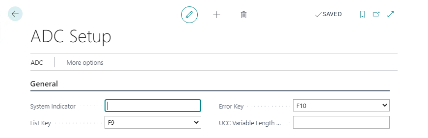

Home
/
Learn
/
ADC Framework
ADC Setup
3 minutes - Unit 2 of 4
ADC Setup will default to the below on first access but can be changed

The List and System keys chosen here will be used across all connections to the ADC webpage as the shortcut key to invoke the related command
Note
the left arrow is ALWAYS the back key within the ADC webpage used to navigate to the previous menu / prompt
List Key
- when a field has a list of predefined values this key can be used to access that list (as well as clicking on the button show n on screen)
System Key
- when errors occur the system logs the error as well as additional information for trouble shooting the issue, pressing the sy stem key during a conversation will display additional information of the last error you user encountered
UCC Variable Length Delimiter
- when using UCC /GS128 barcodes the lot no. and serial number fields have a variable length (delimited by a FNC1 character) - however that FNC1 char is not visible to Business Central. In order to user a lot no. or serial number within the middle of a UCC barcode (i.e. not the last field) the scanner should be configured to replace the FNC1 char with a human readable character (in this case the $ symbol). Doing so enables ADC to determine the end of the variable length data and parse those fields correctly. Note in most cases this is not required unles s you are using both serial numbers and lot no.s within the scanned barcodes, if only using one of those fields this setup can be bypassed if the lot /serial is the last data field within the barcode
Assign the user the required level of permissions, note that all posting / registering processed via the scanner is run as this user and not the user logging into the device. As the ADC Conversations are configured to perform specific activities within Business Central giving this user elevated permissions will not result in the scanners from performing additional activities or viewing additional data.
System Indicator
- This text is used to give a visual indication to users as to which database the ADC is connected to. Simple text or html markup can be entered here i.e.
<span style="color:red">*** UAT ***
will render as shown below
Next unit: ADC Menu Setup
< Back
Continue >
×